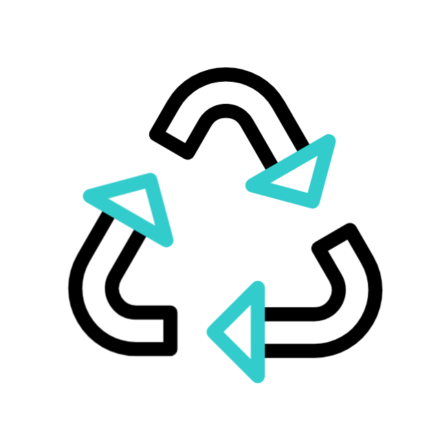

Seja Sustentável: Faça a Diferença Hoje!

Em um mundo cada vez mais consciente dos desafios ambientais que enfrentamos, cada um de nós tem o poder de fazer a diferença. Ser sustentável não é apenas uma escolha, é um compromisso com o futuro do nosso planeta e das gerações futuras. Ao adotarmos práticas sustentáveis em nosso dia a dia, estamos contribuindo para a preservação dos recursos naturais, para a redução da poluição e para a construção de um mundo mais equilibrado e saudável. Desde pequenas ações, como separar o lixo para reciclagem, até grandes mudanças de estilo de vida, como reduzir o consumo de energia e água, cada passo conta. Seja sustentável em suas escolhas. Opte por produtos ecológicos, apoie empresas que se preocupam com o meio ambiente e escolha formas de transporte mais limpas. Seja um exemplo para os outros ao compartilhar seu compromisso com a sustentabilidade e incentivar mudanças positivas em sua comunidade. O futuro está em nossas mãos. Vamos agir hoje para preservar o amanhã. Juntos, podemos fazer a diferença e criar um mundo mais verde, limpo e sustentável para todos.
-

PAPEL
-

PLÁSTICO
-

VIDRO
-

ORGÂNICOS
-

METAL
-

OUTROS

Verde Solidário: Sua Ação, Nosso Mundo
Pequenos gestos podem ter um grande impacto. Ao reciclar materiais e doar alimentos, móveis e eletrodomésticos usáveis, você está ajudando a preservar o meio ambiente e a melhorar a vida de quem precisa.
Reciclagem: Transforme Resíduos em Recursos
Ao separar os materiais recicláveis, você está contribuindo para reduzir a extração de recursos naturais, economizar energia e evitar a poluição. Além disso, a reciclagem gera empregos e promove a economia circular.
Doações: A Solidariedade em Ação
Alimentos não perecíveis e em bom estado podem alimentar famílias necessitadas, enquanto móveis e eletrodomésticos usáveis podem proporcionar conforto e qualidade de vida a outras pessoas.
Como Contribuir?
- Separe os materiais recicláveis e destine-os para a coleta seletiva;
- Dê preferência a produtos com embalagens recicláveis;
- Doe alimentos e itens usáveis para instituições de caridade;
- Antes de descartar móveis ou eletrodomésticos, verifique se podem ser úteis para alguém e considere a doação.
Sua Ação Faz a Diferença
Cada gesto conta. Ao participar do Verde Solidário, você está contribuindo para um mundo mais justo e sustentável. Junte-se a nós e faça a diferença!